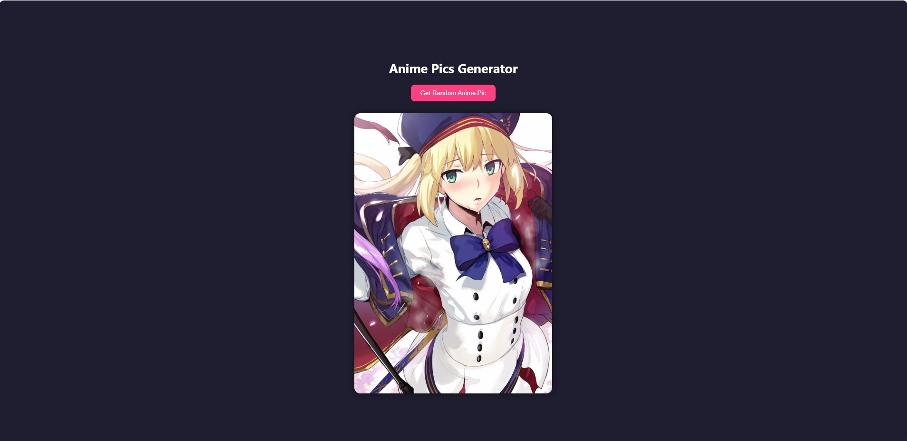
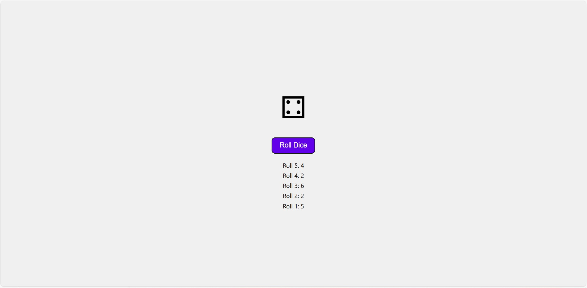

Discover my projects, skills, and journey as a developer.
My learning journey has been a path of growth, resilience, and self-discovery. It didn’t begin in a classroom but in my curiosity—asking questions, seeking answers, and never being fully satisfied with the surface of things. Over time, that curiosity evolved into a hunger for knowledge and a drive to keep improving myself.
In the beginning, I struggled with self-doubt. There were moments when I questioned whether I was smart enough or capable enough to achieve my goals. But with every challenge I faced—whether it was a difficult subject, a failed attempt, or a critical piece of feedback—I learned something valuable. I learned how to persevere, how to adapt, and how to believe in my ability to grow.
One of the biggest turning points in my journey was realizing that learning isn't about being perfect. It’s about progress. It’s about showing up, staying curious, and being willing to make mistakes. That mindset shift gave me the courage to take on new challenges, from learning new skills to stepping outside of my comfort zone.
Today, I see learning as a lifelong process. I'm more confident, more open-minded, and more driven than ever. I know there’s still so much I don’t know—but that excites me. My journey is far from over, and that’s what makes it meaningful.
My goal is to continue evolving—both personally and professionally—by embracing challenges, learning continuously, and applying what I learn to make a meaningful impact. I’m driven by curiosity, fueled by creativity, and committed to growth. Whether it’s mastering new skills, contributing to a team, or leading my own projects, I aim to turn potential into progress and ideas into reality.
Our project involves building an anime picture generator that enables users to fetch a random anime picture and its name. The final version of the project features a button that retrieves data from an API, presenting a random anime picture and its name when clicked. Whenever the 'Get anime' button is clicked, we observe a loading effect first, followed by a new picture with a random name. Throughout the project, we will master the use of APIs to fetch data using the try and catch method. We will learn how to apply a loading effect to the page while waiting for data to load. Furthermore, we will develop our CSS skills by designing a beautiful UI, including the background color of the page.
Welcome to the Dice Roll Simulator project. The final version of the project features a dice at the center of the screen and a "Roll dice" button. The button triggers an animation and generates a random number, which is displayed in the center of the dice when clicked. Additionally, the number is added to a history list. To achieve this, we used modern CSS to style the dice and added a JavaScript event listener to the button. The listener generates a random number, saves it to an array, and updates the history list.
Feel free to reach out to me at olabodeabdullah40@gmail.com.